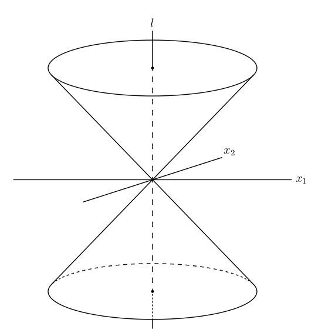
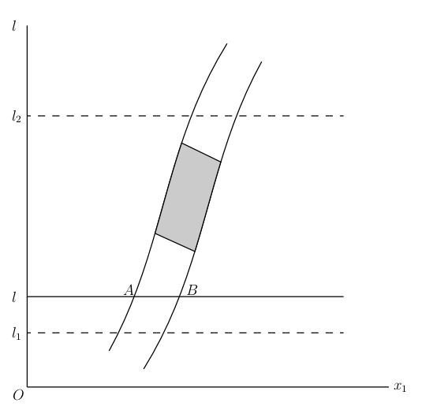
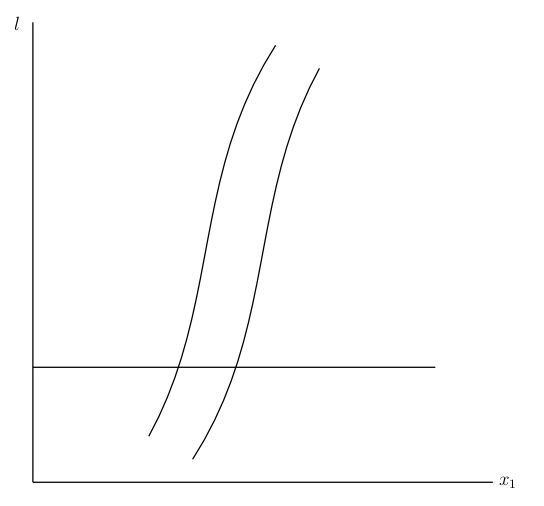

Chapter 2: Lecture II the Theory of Special Relativity¶
2.1 Lecture II the Theory of Special Relativity¶
THE previous considerations concerning the configuration of rigid bodies have been founded, irrespective of the assumption as to the validity of the Euclidean geometry, upon the hypothesis that all directions in space, or all configurations of Cartesian systems of co-ordinates, are physically equivalent. We may express this as the "principle of relativity with respect to direction," and it has been shown how equations (laws of nature) may be found, in accord with this principle, by the aid of the calculus of tensors. We now inquire whether there is a relativity with respect to the state of motion of the space of reference; in other words, whether there are spaces of reference in motion relatively to each other which are physically equivalent. From the standpoint of mechanics it appears that equivalent spaces of reference do exist. For experiments upon the earth tell us nothing of the fact that we are moving about the sun with a velocity of approximately 30 kilometres a second. On the other hand, this physical equivalence does not seem to hold for spaces of reference in arbitrary motion; for mechanical effects do not seem to be subject to the same laws in a jolting railway train as in one moving with uniform velocity; the rotation of the earth must be considered in writing down the equations of motion relatively to the earth. It appears, therefore, as if there were Cartesian systems of co-ordinates, the so-called inertial systems, with reference to which the laws of mechanics (more generally the laws of physics) are expressed in the simplest form. We may infer the validity of the following theorem: If is an inertial system, then every other system ' which moves uniformly and without rotation relatively to , is also an inertial system; the laws of nature are in concordance for all inertial systems. This statement we shall call the "principle of special relativity." We shall draw certain conclusions from this principle of "relativity of translation" just as we have already done for relativity of direction.
In order to be able to do this, we must first solve the following problem. If we are given the Cartesian co-ordinates, , and the time, , of an event relatively to one inertial system, , how can we calculate the co-ordinates, , and the time, ', of the same event relatively to an inertial system ' which moves with uniform translation relatively to ? In the pre-relativity physics this problem was solved by making unconsciously two hypotheses:—
1. The time is absolute; the time of an event, ', relatively to ' is the same as the time relatively to . If instantaneous signals could be sent to a distance, and if one knew that the state of motion of a clock had no influence on its rate, then this assumption would be physically established. For then clocks, similar to one another, and regulated alike, could be distributed over the systems and ', at rest relatively to them, and their indications would be independent of the state of motion of the systems; the time of an event would then be given by the clock in its immediate neighbourhood.
2. Length is absolute; if an interval, at rest relatively to , has a length , then it has the same length relatively to a system ' which is in motion relatively to .
If the axes of and ' are parallel to each other, a simple calculation based on these two assumptions, gives the equations of transformation
This transformation is known as the "Galilean Transformation." Differentiating twice by the time, we get Further, it follows that for two simultaneous events, The invariance of the distance between the two points results from squaring and adding. From this easily follows the co-variance of Newton's equations of motion with respect to the Galilean transformation (21). Hence it follows that classical mechanics is in accord with the principle of special relativity if the two hypotheses respecting scales and clocks are made.
But this attempt to found relativity of translation upon the Galilean transformation fails when applied to electromagnetic phenomena. The Maxwell-Lorentz electromagnetic equations are not co-variant with respect to the Galilean transformation. In particular, we note, by (21), that a ray of light which referred to has a velocity , has a different velocity referred to ', depending upon its direction. The space of reference of is therefore distinguished, with respect to its physical properties, from all spaces of reference which are in motion relatively to it (quiescent æther). But all experiments have shown that electromagnetic and optical phenomena, relatively to the earth as the body of reference, are not influenced by the translational velocity of the earth. The most important of these experiments are those of Michelson and Morley, which I shall assume are known. The validity of the principle of special relativity can therefore hardly be doubted.
On the other hand, the Maxwell-Lorentz equations have proved their validity in the treatment of optical problems in moving bodies. No other theory has satisfactorily explained the facts of aberration, the propagation of light in moving bodies (Fizeau), and phenomena observed in double stars (De Sitter). The consequence of the Maxwell-Lorentz equations that in a vacuum light is propagated with the velocity , at least with respect to a definite inertial system , must therefore be regarded as proved. According to the principle of special relativity, we must also assume the truth of this principle for every other inertial system.
Before we draw any conclusions from these two principles we must first review the physical significance of the concepts "time" and "velocity." It follows from what has gone before, that co-ordinates with respect to an inertial system are physically defined by means of measurements and constructions with the aid of rigid bodies. In order to measure time, we have supposed a clock, , present somewhere, at rest relatively to . But we cannot fix the time, by means of this clock, of an event whose distance from the clock is not negligible; for there are no "instantaneous signals" that we can use in order to compare the time of the event with that of the clock. In order to complete the definition of time we may employ the principle of the constancy of the velocity of light in a vacuum. Let us suppose that we place similar clocks at points of the system , at rest relatively to it, and regulated according to the following scheme. A ray of light is sent out from one of the clocks, , at the instant when it indicates the time , and travels through a vacuum a distance , to the clock ; at the instant when this ray meets the clock the latter is set to indicate the time = + .1 The principle of the constancy of the velocity of light then states that this adjustment of the clocks will not lead to contradictions. With clocks so adjusted, we can assign the time to events which take place near any one of them. It is essential to note that this definition of time relates only to the inertial system , since we have used a system of clocks at rest relatively to . The assumption which was made in the pre-relativity physics of the absolute character of time (i.e. the independence of time of the choice of the inertial system) does not follow at all from this definition.
The theory of relativity is often criticized for giving, without justification, a central theoretical role to the propagation of light, in that it founds the concept of time upon the law of propagation of light. The situation, however, is somewhat as follows. In order to give physical significance to the concept of time, processes of some kind are required which enable relations to be established between different places. It is immaterial what kind of processes one chooses for such a definition of time. It is advantageous, however, for the theory, to choose only those processes concerning which we know something certain. This holds for the propagation of light in vacuo in a higher degree than for any other process which could be considered, thanks to the investigations of Maxwell and H. A. Lorentz.
From all of these considerations, space and time data have a physically real, and not a mere fictitious, significance; in particular this holds for all the relations in which co-ordinates and time enter, e.g. the relations (21). There is, therefore, sense in asking whether those equations are true or not, as well as in asking what the true equations of transformation are by which we pass from one inertial system to another, ', moving relatively to it. It may be shown that this is uniquely settled by means of the principle of the constancy of the velocity of light and the principle of special relativity.
To this end we think of space and time physically defined with respect to two inertial systems, and ', in the way that has been shown. Further, let a ray of light pass from one point to another point of through a vacuum. If is the measured distance between the two points, then the propagation of light must satisfy the equation
If we square this equation, and express by the differences of the co-ordinates, , in place of this equation we can write This equation formulates the principle of the constancy of the velocity of light relatively to . It must hold whatever may be the motion of the source which emits the ray of light.
The same propagation of light may also be considered relatively to ', in which case also the principle of the constancy of the velocity of light must be satisfied. Therefore, with respect to ', we have the equation
Equations (22a) and (22) must be mutually consistent with each other with respect to the transformation which transforms from to '. A transformation which effects this we shall call a "Lorentz transformation."
Before considering these transformations in detail we shall make a few general remarks about space and time. In the pre-relativity physics space and time were separate entities. Specifications of time were independent of the choice of the space of reference. The Newtonian mechanics was relative with respect to the space of reference, so that, e.g. the statement that two non-simultaneous events happened at the same place had no objective meaning (that is, independent of the space of reference). But this relativity had no role in building up the theory. One spoke of points of space, as of instants of time, as if they were absolute realities. It was not observed that the true element of the space-time specification was the event, specified by the four numbers , , , . The conception of something happening was always that of a four-dimensional continuum; but the recognition of this was obscured by the absolute character of the pre-relativity time. Upon giving up the hypothesis of the absolute character of time, particularly that of simultaneity, the four-dimensionality of the time-space concept was immediately recognized. It is neither the point in space, nor the instant in time, at which something happens that has physical reality, but only the event itself. There is no absolute (independent of the space of reference) relation in space, and no absolute relation in time between two events, but there is an absolute (independent of the space of reference) relation in space and time, as will appear in the sequel. The circumstance that there is no objective rational division of the four-dimensional continuum into a three-dimensional space and a one-dimensional time continuum indicates that the laws of nature will assume a form which is logically most satisfactory when expressed as laws in the four-dimensional space-time continuum. Upon this depends the great advance in method which the theory of relativity owes to Minkowski. Considered from this standpoint, we must regard , , , as the four co-ordinates of an event in the four-dimensional continuum. We have far less success in picturing to ourselves relations in this four-dimensional continuum than in the three-dimensional Euclidean continuum; but it must be emphasized that even in the Euclidean three-dimensional geometry its concepts and relations are only of an abstract nature in our minds, and are not at all identical with the images we form visually and through our sense of touch. The non-divisibility of the four-dimensional continuum of events does not at all, however, involve the equivalence of the space co-ordinates with the time co-ordinate. On the contrary, we must remember that the time co-ordinate is defined physically wholly differently from the space co-ordinates. The relations (22) and (22a) which when equated define the Lorentz transformation show, further, a difference in the role of the time co-ordinate from that of the space co-ordinates; for the term has the opposite sign to the space terms, , , .
Before we analyse further the conditions which define the Lorentz transformation, we shall introduce the light-time, , in place of the time, , in order that the constant shall not enter explicitly into the formulas to be developed later. Then the Lorentz transformation is defined in such a way that, first, it makes the equation a co-variant equation, that is, an equation which is satisfied with respect to every inertial system if it is satisfied in the inertial system to which we refer the two given events (emission and reception of the ray of light). Finally, with Minkowski, we introduce in place of the real time co-ordinate , the imaginary time co-ordinate Then the equation defining the propagation of light, which must be co-variant with respect to the Lorentz transformation, becomes This condition is always satisfied2 if we satisfy the more general condition that shall be an invariant with respect to the transformation. This condition is satisfied only by linear transformations, that is, transformations of the type in which the summation over the is to be extended from = 1 to = 4. A glance at equations (23) and (24) shows that the Lorentz transformation so defined is identical with the translational and rotational transformations of the Euclidean geometry, if we disregard the number of dimensions and the relations of reality. We can also conclude that the coefficients must satisfy the conditions Since the ratios of the are real, it follows that all the and the are real, except , , , , , and , which are purely imaginary.
Special Lorentz Transformation. We obtain the simplest transformations of the type of (24) and (25) if only two of the co-ordinates are to be transformed, and if all the , which determine the new origin, vanish. We obtain then for the indices 1 and 2, on account of the three independent conditions which the relations (25) furnish,
This is a simple rotation in space of the (space) co-ordinate system about -axis. We see that the rotational transformation in space (without the time transformation) which we studied before is contained in the Lorentz transformation as a special case. For the indices 1 and 4 we obtain, in an analogous manner,
On account of the relations of reality must be taken as imaginary. To interpret these equations physically, we introduce the real light-time and the velocity of ' relatively to , instead of the imaginary angle . We have, first, Since for the origin of ' i.e., for = 0, we must have , it follows from the first of these equations that and also so that we obtain
These equations form the well-known special Lorentz transformation, which in the general theory represents a rotation, through an imaginary angle, of the four-dimensional system of co-ordinates. If we introduce the ordinary time , in place of the light-time , then in (29) we must replace by and by .
We must now fill in a gap. From the principle of the constancy of the velocity of light it follows that the equation has a significance which is independent of the choice of the inertial system; but the invariance of the quantity does not at all follow from this. This quantity might be transformed with a factor. This depends upon the fact that the right-hand side of (29) might be multiplied by a factor , independent of . But the principle of relativity does not permit this factor to be different from 1, as we shall now show. Let us assume that we have a rigid circular cylinder moving in the direction of its axis. If its radius, measured at rest with a unit measuring rod is equal to , its radius in motion, might be different from , since the theory of relativity does not make the assumption that the shape of bodies with respect to a space of reference is independent of their motion relatively to this space of reference. But all directions in space must be equivalent to each other. may therefore depend upon the magnitude of the velocity, but not upon its direction; must therefore be an even function of . If the cylinder is at rest relatively to ' the equation of its lateral surface is If we write the last two equations of (29) more generally then the lateral surface of the cylinder referred to satisfies the equation The factor therefore measures the lateral contraction of the cylinder, and can thus, from the above, be only an even function of .
If we introduce a third system of co-ordinates, ", which moves relatively to ' with velocity in the direction of the negative -axis of , we obtain, by applying (29) twice, Now, since must be equal to and since we assume that we use the same measuring rods in all the systems, it follows that the transformation of " to must be the identical transformation (since the possibility does not need to be considered). It is essential for these considerations to assume that the behaviour of the measuring rods does not depend upon the history of their previous motion.
Moving Measuring Rods and Clocks. At the definite -time, , the position of the points given by the integers , is with respect to , given by ; this follows from the first of equations (29) and expresses the Lorentz contraction. A clock at rest at the origin of , whose beats are characterized by , will, when observed from ', have beats characterized by this follows from the second of equations (29) and shows that the clock goes slower than if it were at rest relatively to '. These two consequences, which hold, mutatis mutandis, for every system of reference, form the physical content, free from convention, of the Lorentz transformation.
Addition Theorem for Velocities. If we combine two special Lorentz transformations with the relative velocities and , then the velocity of the single Lorentz transformation which takes the place of the two separate ones is, according to (27), given by
General Statements about the Lorentz Transformation and its Theory of Invariants. The whole theory of invariants of the special theory of relativity depends upon the invariant (23). Formally, it has the same rôle in the four-dimensional space-time continuum as the invariant + + in the Euclidean geometry and in the pre-relativity physics. The latter quantity is not an invariant with respect to all the Lorentz transformations; the quantity of equation (23) assumes the rôle of this invariant. With respect to an arbitrary inertial system, may be determined by measurements; with a given unit of measure it is a completely determinate quantity, associated with an arbitrary pair of events.
The invariant differs, disregarding the number of dimensions, from the corresponding invariant of the Euclidean geometry in the following points. In the Euclidean geometry is necessarily positive; it vanishes only when the two points concerned come together. On the other hand, from the vanishing of it cannot be concluded that the two space-time points fall together; the vanishing of this quantity , is the invariant condition that the two space-time points can be connected by a light signal in vacuo. If a point (event) represented in the four-dimensional space of the , , , then all the "points" which can be connected to by means of a light signal lie upon the cone = 0 (compare Fig. 1, in which the dimension is suppressed). The "upper" half of the cone may contain the "points" to which light signals can be sent from ; then the "lower" half of the cone will contain the "points" from which light signals can be sent to . The points enclosed by the conical surface furnish, with , a negative ; as well as is then, according to Minkowski, of the nature of a time. Such intervals represent elements of possible paths of motion, the velocity being less than that of light.3 In this case the -axis may be drawn in the direction of by suitably choosing the state of motion of the inertial system. If lies outside of the "light-cone" then is of the nature of a space; in this case, by properly choosing the inertial system, can be made to vanish.

By the introduction of the imaginary time variable, , Minkowski has made the theory of invariants for the four-dimensional continuum of physical phenomena fully analogous to the theory of invariants for the three-dimensional continuum of Euclidean space. The theory of four-dimensional tensors of special relativity differs from the theory of tensors in three-dimensional space, therefore, only in the number of dimensions and the relations of reality.
A physical entity which is specified by four quantities, , in an arbitrary inertial system of the , , , , is called a 4-vector, with the components , if the correspond in their relations of reality and the properties of transformation to the ; it may be of the nature of a space or of a time. The sixteen quantities , then form the components of a tensor of the second rank, if they transform according to the scheme It follows from this that the behave, with respect to their properties of transformation and their properties of reality, as the products of components, of two 4-vectors, () and (). All the components are real except those which contain the index 4 once, those being purely imaginary. Tensors of the third and higher ranks may be defined in an analogous way. The operations of addition, subtraction, multiplication, contraction and differentiation for these tensors are wholly analogous to the corresponding operations for tensors in three-dimensional space.
Before we apply the tensor theory to the four-dimensional space-time continuum, we shall examine more particularly the skew-symmetrical tensors. The tensor of the second rank has, in general, 16 = 4·4 components. In the case of skew-symmetry the components with two equal indices vanish, and the components with unequal indices are equal and opposite in pairs. There exist, therefore, only six independent components, as is the case in the electromagnetic field. In fact, it will be shown when we consider Maxwell's equations that these may be looked upon as tensor equations, provided we regard the electromagnetic field as a skew-symmetrical tensor. Further, it is clear that the skew-symmetrical tensor of the third rank (skew-symmetrical in all pairs of indices) has only four independent components, since there are only four combinations of three different indices.
We now turn to Maxwell's equations (19a), (19b), (20a), (20b), and introduce the notation:4 with the convention that shall be equal to . Then Maxwell's equations may be combined into the forms as one can easily verify by substituting from (30a) and (31). Equations (32) and (33) have a tensor character, and are therefore co-variant with respect to Lorentz transformations, if the and the have a tensor character, which we assume. Consequently, the laws for transforming these quantities from one to another allowable (inertial) system of co-ordinates are uniquely determined. The progress in method which electrodynamics owes to the theory of special relativity lies principally in this, that the number of independent hypotheses is diminished. If we consider, for example, equations (19a) only from the standpoint of relativity of direction, as we have done above, we see that they have three logically independent terms. The way in which the electric intensity enters these equations appears to be wholly independent of the way in which the magnetic intensity enters them; it would not be surprising if instead of , we had, say, or if this term were absent. On the other hand, only two independent terms appear in equation (32). The electromagnetic field appears as a formal unit; the way in which the electric field enters this equation is determined by the way in which the magnetic field enters it. Besides the electromagnetic field, only the electric current density appears as an independent entity. This advance in method arises from the fact that the electric and magnetic fields draw their separate existences from the relativity of motion. A field which appears to be purely an electric field, judged from one system, has also magnetic field components when judged from another inertial system. When applied to an electromagnetic field, the general law of transformation furnishes, for the special case of the special Lorentz transformation, the equations
If there exists with respect to only a magnetic field, , but no electric field, , then with respect to ' there exists an electric field as well, which would act upon an electric particle at rest relatively to '. An observer at rest relatively to would designate this force as the Biot-Savart force, or the Lorentz electromotive force. It therefore appears as if this electromotive force had become fused with the electric field intensity into a single entity.
In order to view this relation formally, let us consider the expression for the force acting upon unit volume of electricity, in which is the vector velocity of electricity, with the velocity of light as the unit. If we introduce and according to (30a) and (31), we obtain for the first component the expression Observing that vanishes on account of the skew-symmetry of the tensor (), the components of are given by the first three components of the four-dimensional vector and the fourth component is given by There is, therefore, a four-dimensional vector of force per unit volume, whose first three components, , , , are the ponderomotive force components per unit volume, and whose fourth component is the rate of working of the field per unit volume, multiplied by .
A comparison of (36) and (35) shows that the theory of relativity formally unites the ponderomotive force of the electric field, , and the Biot-Savart or Lorentz force [, ].
Mass and Energy. An important conclusion can be drawn from the existence and significance of the 4-vector . Let us imagine a body upon which the electromagnetic field acts for a time. In the symbolic figure (Fig. 2) designates the -axis, and is at the same time a substitute for the three space axes , , ; designates the real time axis. In this diagram a body of finite extent is represented, at a definite time , by the interval the whole space-time existence of the body is represented by a strip whose boundary is everywhere inclined less than 45° to the -axis. Between the time sections, = and = , but not extending to them, a portion of the strip is shaded. This represents the portion of the space-time manifold in which the electromagnetic field acts upon the body, or upon the electric charges contained in it, the action upon them being transmitted to the body. We shall now consider the changes which take place in the momentum and energy of the body as a result of this action.

We shall assume that the principles of momentum and energy are valid for the body. The change in momentum, , , , and the change in energy, are then given by the expressions Since the four-dimensional element of volume is an invariant, and (, , , ) forms a 4-vector, the four-dimensional integral extended over the shaded portion transforms as a 4-vector, as does also the integral between the limits and , because the portion of the region which is not shaded contributes nothing to the integral. It follows, therefore, that , , , form a 4-vector. Since the quantities themselves transform in the same way as their increments, it follows that the aggregate of the four quantities has itself the properties of a vector; these quantities are referred to an instantaneous condition of the body (e.g. at the time = ).
This 4-vector may also be expressed in terms of the mass , and the velocity of the body, considered as a material particle. To form this expression, we note first, that is an invariant which refers to an infinitely short portion of the four-dimensional line which represents the motion of the material particle. The physical significance of the invariant may easily be given. If the time axis is chosen in such a way that it has the direction of the line differential which we are considering, or, in other words, if we reduce the material particle to rest, we shall then have ; this will therefore be measured by the light-seconds clock which is at the same place, and at rest relatively to the material particle. We therefore call the proper time of the material particle. As opposed to , is therefore an invariant, and is practically equivalent to for motions whose velocity is small compared to that of light. Hence we see that has, just as the , the character of a vector; we shall designate () as the four-dimensional vector (in brief, 4-vector) of velocity. Its components satisfy, by (38), the condition We see that this 4-vector, whose components in the ordinary notation are is the only 4-vector which can be formed from the velocity components of the material particle which are defined in three dimensions by We therefore see that must be that 4-vector which is to be equated to the 4-vector of momentum and energy whose existence we have proved above. By equating the components, we obtain, in three-dimensional notation,
We recognize, in fact, that these components of momentum agree with those of classical mechanics for velocities which are small compared to that of light. For large velocities the momentum increases more rapidly than linearly with the velocity, so as to become infinite on approaching the velocity of light.
If we apply the last of equations (43) to a material particle at rest ( = 0), we see that the energy, of a, body at rest is equal to its mass. Had we chosen the second as our unit of time, we would have obtained Mass and energy are therefore essentially alike; they are only different expressions for the same thing. The mass of a body is not a constant; it varies with changes in its energy.5 We see from the last of equations (43) that becomes infinite when approaches 1, the velocity of light. If we develop in powers of , we obtain, The second term of this expansion corresponds to the kinetic energy of the material particle in classical mechanics.
Equations of Motion of Material Particles. From (43) we obtain, by differentiating by the time , and using the principle of momentum, in the notation of three-dimensional vectors,
This equation, which was previously employed by H. A. Lorentz for the motion of electrons, has been proved to be true, with great accuracy, by experiments with -rays.
Energy Tensor of the Electromagnetic Field. Before the development of the theory of relativity it was known that the principles of energy and momentum could be expressed in a differential form for the electromagnetic field. The four-dimensional formulation of these principles leads to an important conception, that of the energy tensor, which is important for the further development of the theory of relativity.
If in the expression for the 4-vector of force per unit volume, using the field equations (32), we express in terms of the field intensities, , we obtain, after some transformations and repeated application of the field equations (32) and (33), the expression where we have written6
The physical meaning of equation (47) becomes evident if in place of this equation we write, using a new notation, or, on eliminating the imaginary,
When expressed in the latter form, we see that the first three equations state the principle of momentum; ,..., are the Maxwell stresses in the electromagnetic field, and (, , ) is the vector momentum per unit volume of the field. The last of equations (47b) expresses the energy principle; is the vector flow of energy, and the energy per unit volume of the field. In fact, we get from (48) by introducing the well-known expressions for the components of the field intensity from electrodynamics, We conclude from (48) that the energy tensor of the electromagnetic field is symmetrical; with this is connected the fact that the momentum per unit volume and the how of energy are equal to each other (relation between energy and inertia).
We therefore conclude from these considerations that the energy per unit volume has the character of a tensor. This has been proved directly only for an electromagnetic field, although we may claim universal validity for it. Maxwell's equations determine the electromagnetic field when the distribution of electric charges and currents is known. But we do not know the laws which govern the currents and charges. We do know, indeed, that electricity consists of elementary particles (electrons, positive nuclei), but from a theoretical point of view we cannot comprehend this. We do not know the energy factors which determine the distribution of electricity in particles of definite size and charge, and all attempts to complete the theory in this direction have failed. If then we can build upon Maxwell's equations in general, the energy tensor of the electromagnetic field is known only outside the charged particles.7 In these regions, outside of charged particles, the only regions in which we can believe that we have the complete expression for the energy tensor, we have, by (47),
General Expressions for the Conservation Principles. We can hardly avoid making the assumption that in all other cases, also, the space distribution of energy is given by a symmetrical tensor, , and that this complete energy tensor everywhere satisfies the relation (47c). At any rate we shall see that by means of this assumption we obtain the correct expression for the integral energy principle.
Let us consider a spatially bounded, closed system, which, four-dimensionally, we may represent as a strip, outside of which the vanish. Integrate equation (47c) over a space section. Since the integrals of , and vanish because the vanish at the limits of integration, we obtain Inside the parentheses are the expressions for the momentum of the whole system, multiplied by , together with the negative energy of the system, so that (49) expresses the conservation principles in their integral form. That this gives the right conception of energy and the conservation principles will be seen from the following considerations.
PHENOMENOLOGICAL REPRESENTATION OF THE ENERGY TENSOR OF MATTER.
Hydrodynamical Equations. We know that matter is built up of electrically charged particles, but we do not know the laws which govern the constitution of these particles. In treating mechanical problems, we are therefore obliged to make use of an inexact description of matter, which corresponds to that of classical mechanics. The density , of a material substance and the hydrodynamical pressures are the fundamental concepts upon which such a description is based.

Let be the density of matter at a place, estimated with reference to a system of co-ordinates moving with the matter. Then , the density at rest, is an invariant. If we think of the matter in arbitrary motion and neglect the pressures (particles of dust in vacuo, neglecting the size of the particles and the temperature), then the energy tensor will depend only upon the velocity components, and . We secure the tensor character of by putting in which the , in the three-dimensional representation, are given by (41). In fact, it follows from (50) that for , (equal to the negative energy per unit volume), as it should, according to the theorem of the equivalence of mass and energy, and according to the physical interpretation of the energy tensor given above. If an external force (four-dimensional vector, ) acts upon the matter, by the principles of momentum and energy the equation must hold. We shall now show that this equation leads to the same law of motion of a material particle as that already obtained. Let us imagine the matter to be of infinitely small extent in space, that is, a four-dimensional thread; then by integration over the whole thread with respect to the space co-ordinates , , , we obtain
Now is an invariant, as is, therefore, also . We shall calculate this integral, first with respect to the inertial system which we have chosen, and second, with respect to a system relatively to which the matter has the velocity zero. The integration is to be extended over a filament of the thread for which may be regarded as constant over the whole section. If the space volumes of the filament referred to the two systems are and respectively, then we have and therefore also
If we substitute the right-hand side for the left-hand side in the former integral, and put outside the sign of integration, we obtain, We see, therefore, that the generalized conception of the energy tensor is in agreement with our former result.
The Eulerian Equations for Perfect Fluids. In order to get nearer to the behaviour of real matter we must add to the energy tensor a term which corresponds to the pressures. The simplest case is that of a perfect fluid in which the pressure is determined by a scalar . Since the tangential stresses , etc., vanish in this case, the contribution to the energy tensor must be of the form . We must therefore put At rest, the density of the matter, or the energy per unit volume, is in this case, not but . For In the absence of any force, we have If we multiply this equation by and sum for the 's we obtain, using (40), where we have put . This is the equation of continuity, which differs from that of classical mechanics by the term , which, practically, is vanishingly small. Observing (52), the conservation principles take the form The equations for the first three indices evidently correspond to the Eulerian equations. That the equations (52) and (53) correspond, to a first approximation, to the hydrodynamical equations of classical mechanics, is a further confirmation of the generalized energy principle. The density of matter and of energy has the character of a symmetrical tensor.
-
Strictly speaking, it would be more correct to define simultaneity first, somewhat as follows: two events taking place at the points and of the system are simultaneous if they appear at the same instant when observed from the middle point, , of the interval . Time is then defined as the ensemble of the indications of similar clocks, at rest relatively to , which register the same simultaneously. ↩
-
That this specialization lies in the nature of the case will be evident later. ↩
-
That material velocities exceeding that of light are not possible, follows from the appearance of the radical in the special Lorentz transformation (29). ↩
-
In order to avoid confusion from now on we shall use the three-dimensional space indices, , , instead of 1, 2, 3, and we shall reserve the numeral indices 1, 2, 3, 4 for the four-dimensional space-time continuum. ↩
-
The emission of energy in radioactive processes is evidently connected with the fact that the atomic weights are not integers. Attempts have been made to draw conclusions from this concerning the structure and stability of the atomic nuclei. ↩
-
To be summed for the indices and . ↩
-
It has been attempted to remedy this lack of knowledge by considering the charged particles as proper singularities. But in my opinion this means giving up a real understanding of the structure of matter. It seems to me much better to give in to our present inability rather than to be satisfied by a solution that is only apparent. ↩